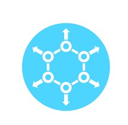

National Dataset
Creating a national dataset of annotated images is a complex task that requires a significant amount of resources and expertise. It's important to have a team with the necessary skills and experience in data collection, annotation, quality control, data management, and distribution. The dataset should be continuously updated and maintained to keep it relevant with the latest environments and conditions.The process typically involves the following steps:
STEP 1: Data collection
The first step is to collect a large and diverse set of images that represents the range of environments, conditions, and scenarios that autonomous vehicles are likely to encounter. This may involve using cameras mounted on vehicles, drones, or satellites, or using publicly available datasets.
STEP 2: Annotation
Once the images have been collected, they need to be annotated, which means adding labels and tags to the images to provide context and meaning. This can be done manually by human annotators, or automatically using machine learning algorithms.
STEP 3: Quality Control
After the images have been annotated, it's important to check the quality of the annotation to ensure that it is accurate and reliable. This may involve using a combination of manual and tool-based methods.

STEP 4: Data Management
Once the dataset is complete, it needs to be managed and stored in a way that makes it accessible and usable for researchers and developers. This may involve using a database management system or a cloud-based storage solution.
